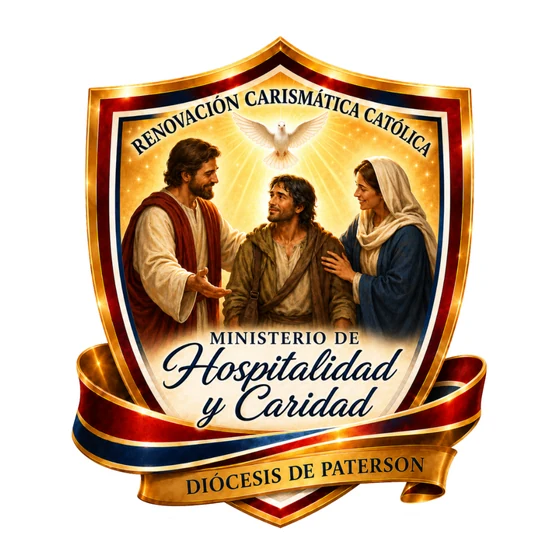

Acoger al hermano es recibir a Cristo; atenderlo con amor es hacer visible su misericordia.
Es el ministerio que manifiesta el amor de Cristo mediante la acogida fraterna, el servicio humilde y la atención prudente a las necesidades humanas y espirituales de los hermanos. Sirve en los eventos diocesanos y en el acompañamiento de personas enfermas, solas, recién llegadas o en dificultad. Cada persona debe ser recibida con dignidad, alegría, respeto y discreción.
Su misión es manifestar el amor de Cristo a través de la acogida fraterna, el servicio humilde, la oración y la atención organizada a las necesidades de quienes participan en las actividades diocesanas o atraviesan enfermedad, crisis, soledad o dificultad.
Su visión es consolidar una cultura de hospitalidad, caridad y solidaridad dentro de la Renovación Carismática Católica de la Diócesis de Paterson, para que cada persona que llegue se sienta recibida, acompañada e integrada a una comunidad donde pueda experimentar el amor de Dios.
No es solamente un equipo de protocolo, orden o acomodadores: es una presencia fraterna que recibe, escucha, orienta y acompaña — un puente entre la persona, la comunidad, los grupos de oración y los recursos pastorales.
El punto de partida de toda acogida.
Servicio humilde a quien lo necesita.
Sin protagonismo ni exposición pública.
Recibir con dignidad, alegría y respeto.
Cuidar la privacidad de cada hermano.
“Acoger al hermano es recibir a Cristo; atenderlo con amor es hacer visible su misericordia.”
— Concepto central, Guía Pastoral del Ministerio de Hospitalidad y Caridad · RCC Paterson NJ“Porque tuve hambre y ustedes me dieron de comer; tuve sed y me dieron de beber; fui forastero y me recibieron; estuve desnudo y me vistieron; enfermo y me visitaron; en la cárcel y vinieron a verme.”
— Mateo 25,35-36 · fundamento bíblico del Ministerio de Hospitalidad y Caridad